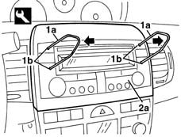
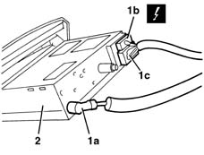

5570T80 car radio unit - r+r
- Path
- Procedures > 55 ELECTRICAL EQUIPMENT > 5570 ACCESSORIES > 5570T car radio and car telephone > 5570T80 car radio unit - r+r
- Kind
- repair procedure (removal / refitting; the operation number is the code)
- Applies to
- all engines; all production periods
- Interactive page
- https://sloeber94.github.io/elrnDB-lYpsln/en/#/2429442
Applies to: all engines; all production periods
 Removing
Removing
 Refitting
Refitting1. Fit tool (1a) (tool number 46515517) fully into holes (1b) present on the radio.
2. Grasp tools (1a) and push them out and pull them towards you to remove the radio (2a).

Applies to: all engines; all production periods
1. Disconnect electrical connections (1a) and connections (1b), (1c).
 | Name | Connector |
|---|---|---|
1b | Radio |
| Name | Connector |
|---|---|---|
1c | Radio |
2. Take out the radio

Applies to: all engines; all production periods
Refitting
RemovingCheck that the radio is not damaged.
Connect the electrical connections and the radio aerial lead.
Check the radio and speakers are working properly.
Fit the radio into into its compartment, taking care not to compress the electrical wires.
Push the radio fully home until it locks in place.
Topics linked from this page (2)
Topics that link to this page (15)
- 5010C12 Windscreen demising VENT - R.R.
- 5010C31 centre air outlet on facia one lh or rh r r
- 5020B10 heater control support - r+r
- 5020B28 air conditioner symbol light bulb/s - includes control panel r+r
- 5020B35 outdoor/recirculation air intake flap control cable - r r
- 5020B38 air distribution flap control cable - r+r
- 5020B42 air mixer flap control cable - r+r
- 5040C10 air conditioner box - r+r
- 5040D20 air conditioner control switches/button unit - r r
- 5040D75 Air conditioning recirculation flap control MOTOR - R.R.
- 5570T10 car radio support - r+r - includes contact repair and supply circuit check
- 5580C22 AIR BAG MODULE - Passenger side - R.R.
- 7040A10 instrument facia trim - r+r
- 7040A25 central facia trim - r r
- 7040L10 cabin floor carpet - r r